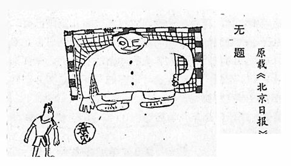

Seniority 5
-
 新班子 · The New Leadership Group
新班子 · The New Leadership Group
Quan Xiao 全笑. Renshi (Personnel), 1985 no. 2 (whole no. 2), p. 47. -
 水平 · Level
水平 · Level
Wei Ping 玮平. Renshi (Personnel), 1985 no. 3 (whole no. 3), p. 44. -

无题 · Untitled
Unattributed. Renshi (Personnel), 1986 no. 4 (whole no. 7), p. 43. Reprinted from Beijing ribao (Beijing Daily). -
 要是官衔也能保险就好了！ · If Only Official Rank Could Be Insured Too!
要是官衔也能保险就好了！ · If Only Official Rank Could Be Insured Too!
Unattributed. Renshi (Personnel), 1986 no. 7 (whole no. 10), p. 29. -
 ——论资历也该轮到您老了！ · "By Seniority, It Really Should Be Your Turn!"
——论资历也该轮到您老了！ · "By Seniority, It Really Should Be Your Turn!"
Shi Songtao 石松涛. Renshi (Personnel), 1986 no. 8 (whole no. 11), p. 48.